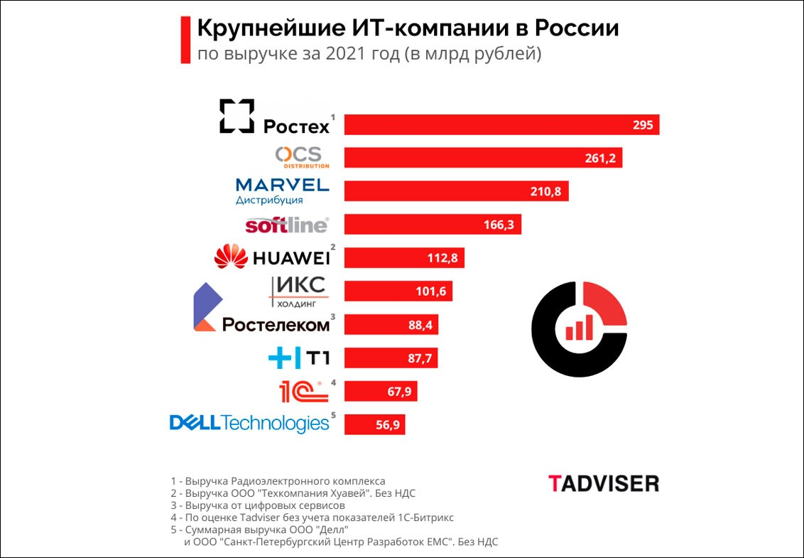

1 марта в 12:00

Ленивая загрузка изображений с использованием IntersectionObserver
Ленивая загрузка изображений — хорошая практика улучшения производительности, при которой изображения загружаются не сразу, а отложенно, в тот момент, когда они действительно нужны — например, если юзер докрутил страницу до них. Термин «ленивая загрузка» также применяется к другим типам ресурсов, например, к CSS- и JS-файлам, но это немного другая техника, так что о ней мы сейчас говорить не будем.
Читать >>>>>
17 сентября в 12:00
Как попасть в топовые IT-компании России
В 2022 году лучшим работодателем в сфере IT в России среди крупных компаний — с численностью более пяти тысяч сотрудников — стала группа компаний «Ланит», свидетельствуют данные опроса «Хабр Карьеры». Ежегодный рейтинг опубликован на сайте сервиса.
Читать >>>>>